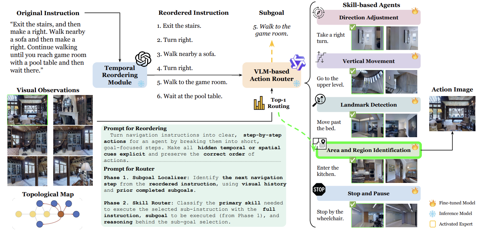
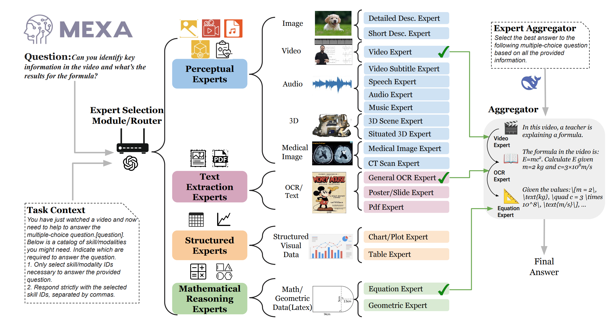
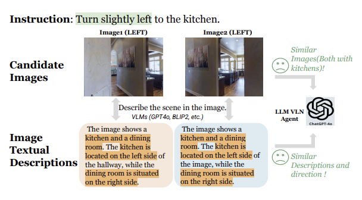

Yue Zhang
Hello! I am a postdoctoral research associate in the MURGe-Lab led by Prof. Mohit Bansal , at the University of North Carolina, Chapel Hill. I earned my Ph.D. at Michigan State University, where I was advised by Prof. Parisa Kordjamshidi . I was a visiting scholar at Virginia Tech, collaborating with Prof. Lifu Huang . Prior to Ph.D. study, I obtained my master’s degree from Peking University. My research interests include multimodal learning, embodied agents, and spatial reasoning.
Email /
CV /
Google Scholar /
Github /
LinkedIn
News
[2025.11] Please check NEW preprints of DEER3D and SketchVerify !
[2025.8] Two papers got accepted by EMNLP 2025!
[2025.6] Please check NEW preprints of MEXA and EPiC .
[2025.4] Offically Joined MURGe-Lab!
[2025.2] One paper got accepted by CVPR 2025!
Selected Publications
Error-Driven Scene Editing for 3D Grounding in Large Language Models
Yue Zhang ,
Zun Wang ,
Han Lin ,
Jialu Li ,
Jianing Yang ,
Yonatan Bitton ,
Idan Szpektor ,
Mohit Bansal
Preprint , 2025
ArXiv /
Code
Planning with Sketch-Guided Verification for Physics-Aware Video Generation
Yidong Huang ,
Zun Wang ,
Han Lin ,
Dong-Ki Kim ,
Shayegan Omidshafiei ,
Jaehong Yoon ,
Yue Zhang ,
Mohit Bansal
Preprint , 2025
ArXiv /
Code
MedForget: Hierarchy-Aware Multimodal Unlearning Testbed for Medical AI
Fengli Wu* ,
Vaidehi Patil* ,
Jaehong Yoon ,
Yue Zhang* ,
Mohit Bansal
Preprint , 2025
ArXiv /
Code

Breaking Down and Building Up: Mixture of Skill-Based Vision-and-Language Navigation Agents
Tianyi Ma ,
Yue Zhang ,
Zehao Wang ,
Parisa Kordjamshidi
Preprint , 2025
ArXiv /
Your browser does not support the video tag.
EPiC: Efficient Video Camera Control Learning with Precise Anchor-Video Guidance
Zun Wang ,
Jaemin Cho ,
Jialu Li ,
Han Lin ,
Jaehong Yoon ,
Yue Zhang ,
Mohit Bansal
Preprint , 2025
ArXiv /
Code
DART: Leveraging Multi-Agent Disagreement for Tool Recruitment in Multimodal Reasoning
Nithin Sivakumaran ,
Justin Chih-Yao Chen ,
David Wan ,
Yue Zhang* ,
Jaehong Yoon ,
Elias Stengel-Eskin ,
Mohit Bansal
EACL , 2026
ArXiv /
Code

MEXA: Towards General Multimodal Reasoning with Dynamic Multi-Expert Aggregation
Shoubin Yu* ,
Yue Zhang* ,
Ziyang Wang ,
Jaehong Yoon ,
Mohit Bansal
EMNLP Findings , 2025
ArXiv /
Code

Vision-and-Language Navigation with Analogical Textual Descriptions in LLMs
Yue Zhang ,
Tianyi Ma ,
Zun Wang ,
Yanyuan Qiao ,
Parisa Kordjamshidi
EMNLP , 2025
ArXiv /
Code
Rethinking Vision Language Model in Face Forensic: Multi-modal Interpretable Forged Face Detector
Xiao Guo ,
Xiufeng Song ,
Yue Zhang ,
Xiaohong Liu ,
Xiaoming Liu
CVPR (Oral ) , 2025
ArXiv /
Code
SPARTUN3D: Situated Spatial Understanding of 3D World in Large Language Models
Yue Zhang ,
Zhiyang Xu ,
Ying Shen ,
Parisa Kordjamshidi ,
Lifu Huang
ICLR , 2025
ArXiv /
Code
Vision-and-Language Navigation Today and Tomorrow: A Survey in the Era of Foundation Models
Yue Zhang* ,
Ziqiao Ma* ,
Jialu Li* ,
Yanyuan Qiao* ,
Zun Wang* ,
Joyce Chai ,
Qi Wu ,
Mohit Bansal ,
Parisa Kordjamshidi
TMLR , 2024
ArXiv /
Code
Narrowing the Gap between Vision and Action in Navigation
Yue Zhang ,
Parisa Kordjamshidi
ACM MM , 2024
ArXiv /
Code
Common Sense Reasoning for Deepfake Detection
Yue Zhang , Ben Colman,
Xiao Guo , Ali Shahriyari,
Gaurav Bharaj
ECCV , 2024
ArXiv /
Code
NavHint: Vision and Language Navigation Agent with a Hint Generator
Yue Zhang ,
Quan Guo ,
Parisa Kordjamshidi
EACL Findings , 2024
ArXiv /
Code
VLN-Trans: Translator for the Vision and Language Navigation Agent
Yue Zhang ,
Parisa Kordjamshidi
ACL (Oral ) , 2023
ArXiv
Code
LOViS: Learning Orientation and Visual Signals for Vision and Language Navigation
Yue Zhang ,
Parisa Kordjamshidi
COLING (Oral ) , 2022
ArXiv /
Code
Explicit Object Relation Alignment for Vision and Language Navigation
Yue Zhang ,
Parisa Kordjamshidi
ACL SRW , 2022
ArXiv /
Code
Towards Navigation by Reasoning over Spatial Configurations
Yue Zhang ,
Quan Guo ,
Parisa Kordjamshidi
ACL workshop on SpLU-RoboNLP , 2021
ArXiv /
Code
Professional Service
[2024.7] Co-organizer of SpLU-RoboNLP @ ACL 2024
[2022.11] Invited talk at Sichuan University
Reviewer for ACL, EMNLP, NAACL